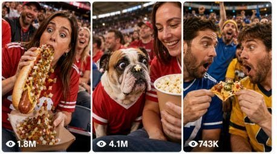

Back to all prompts
FIFA 2026 Girls + Funny Food Challenge Full Package
Storyboard & Reference

Download Reference{kind=link}
ULTRA MASTER PROMPT — VIRAL STADIUM FOOD REACTION 5-PANEL STORYBOARD SHEET SYSTEM
MASTER PURPOSE
Create one complete 9:16 visual storyboard sheet for a 15-second short-form viral sports-food reaction video.
The final output must be a single vertical storyboard image, not a live action frame, not a collage of random photos, and not a poster.
It must look like a professional 5-panel cinematic timeline storyboard designed for Seedance 2.0 / 15-second video planning.
The storyboard must show a clear action progression from start to finish using five sequential frames, each representing a 3-second section of the video:
0–3s
3–6s
6–9s
9–12s
12–15s
The storyboard must feel like a viral stadium crowd-cam comedy concept based on funny food reactions during a major football match.
CORE OUTPUT FORMAT
Generate one single 9:16 Vertical storyboard sheet with:
TOP AREA
Large bold title centered at the top
Title must be easy to read, black or dark bold uppercase text
White or light clean background around the layout
Professional visual hierarchy
MIDDLE AREA
Exactly 5 vertical image panels in one row
Each panel should show the next step in the same scene
Panels must be evenly spaced and aligned
Each panel must contain a high-quality realistic image
PANEL LABELS
Each panel must clearly show time labels:
0–3s
3–6s
6–9s
9–12s
12–15s
BOTTOM CAPTIONS
Under each panel, include a short readable caption explaining that moment.
Captions should be:
concise
visually clean
easy to read
one or two short lines
written in natural English
OPTIONAL FOOTER
Optional clean footer text allowed, such as:
VIDEO LENGTH: 15 SECONDS
FORMAT: 9:16
STYLE: REAL-WORLD CROWD CAM
SEEDANCE 2.0 — 15 SEC VIDEO STORYBOARD
VISUAL STYLE LOCK
The entire storyboard must feel:
ultra-realistic
high detail
raw real-world sports broadcast look
crowd-cam style
candid and believable
social-media viral
realistic stadium lighting
realistic crowd depth
premium visual polish
not cartoon
not illustration
not CGI
not fantasy art
not random AI collage
All frames should look like they belong to the same scene and the same video.
CONTINUITY LOCK
This is very important:
Every one of the 5 panels must preserve:
the same main character
same face
same identity
same clothing / jersey
same country supporter styling
same hairstyle
same stadium environment
same overall camera angle style
same seat position / same match atmosphere
Only the action and expression should progress from panel to panel.
Do not make each panel look like a different person or different place.
CHARACTER OPTIONS
The storyboard may feature either:
OPTION A — SUPPORTER GIRL
beautiful adult female football supporter
age 21–28
realistic, pretty, expressive
different country supporter according to the concept
fitted team-color jersey or supporter top
small face paint or cheek stripes
stadium crowd around her
viral broadcast-cam beauty + funny reaction energy
OPTION B — ANIMAL SUPPORTER
funny realistic animal supporter
e.g. bulldog, husky, orange cat, golden retriever, chihuahua
dressed with subtle country supporter styling such as scarf, jersey, bandana, or cheek paint
must look believable inside a stadium crowd comedy concept
expressions should be funny and readable
animal identity must remain the same across all 5 panels
OPTION C — TWO-FAN STORY
two rival supporters
both consistent across all five panels
comedic interaction progression
same stadium seating and snack object throughout
STADIUM ENVIRONMENT LOCK
All panels should show:
real football stadium seating
believable crowd behind the subject
fans wearing country colors
subtle background blur
real sports event lighting
natural shadows and highlights
crowd energy matching the moment
The background can react as the action escalates, but it must stay in the same match setting.
CAMERA / COMPOSITION LOCK
clean front-facing or slight 3/4 crowd-cam angle
medium close-up to medium framing
main subject clearly visible in each panel
snack / drink must also be visible where relevant
no dramatic cinematic angle changes between panels
progression should feel like a planned visual sequence
STORYBOARD NARRATIVE RULE
The 5 panels must tell a full short story with a clear arc:
Panel 1 — Setup
Introduce the subject, the food/drink, and the situation.
Panel 2 — Build
The subject starts engaging with the snack or situation.
Panel 3 — Escalation
Something funny intensifies: big bite, spill risk, crowd reaction, price shock, spice hit, oversized object struggle, etc.
Panel 4 — Peak Chaos / Reaction
The biggest funny moment happens here.
Panel 5 — Aftermath / Punchline
Show the final reaction, realization, regret, embarrassment, laughter, or wholesome ending.
TEXT RENDERING RULES
Text must be clearly readable and professionally laid out.
Title:
large
bold
uppercase
centered at top
Time labels:
clearly shown above each panel
bold and readable
Captions:
short, clean English sentences
directly describe the action in that frame
not too long
should visually match professional storyboard style
Avoid broken text, gibberish, or unreadable typography.
FOOD / COMEDY CONCEPT STYLE
The concept should be based on viral stadium food reactions, such as:
giant nachos portion shock
spicy sauce overconfidence fail
oversized soda lift struggle
hot dog price reaction
goal celebration causing cheese spill
jalapeño first-time reaction
rival fans sharing one snack
brain freeze from giant soda
loaded fries mess attack
snack so big fan misses the goal
Comedy must feel:
visual
obvious
shareable
meme-worthy
easy to understand even at a glance
NEGATIVE RULES
Do not create:
random collage with no continuity
different character in each frame
different outfit every frame
fantasy background
empty plain background
poster instead of storyboard
illegible captions
weird anatomy
distorted food
extra limbs
inconsistent face
AI plastic skin
low detail
overdesigned graphic clutter
more than 5 panels
vertical storyboard
chaotic layout
EDIT-ONLY FIELD VERSION
Use this section only to change the concept each time:
TITLE: [insert storyboard title]
MAIN SUBJECT: [girl supporter / animal supporter / two rival fans]
COUNTRY / TEAM VIBE: [insert country]
FOOD / PROP: [nachos / fries / soda / hot dog / burger / jalapeño snack etc.]
CORE GAG: [insert main funny action]
ENDING MOOD: [shock / regret / laugh / panic / friendship / confusion / proud recovery]
FULL COPY-PASTE ULTRA MASTER PROMPT
Create one complete 9:16 Vertical visual storyboard sheet for a 15-second viral football stadium food-reaction video. The final output must be a single clean storyboard image, not a random collage, with a large bold uppercase title centered at the top, exactly five vertical image panels across the middle, clear time labels above each panel reading 0–3s, 3–6s, 6–9s, 9–12s, and 12–15s, and one short readable English caption below each panel. The storyboard must look professional, cinematic, high-detail, and Seedance 2.0 friendly, with a clean white or light background around the layout and a polished real-world crowd-cam aesthetic.
The concept title is: “[TITLE]”.
The main subject is: [MAIN SUBJECT]. The subject should support [COUNTRY / TEAM VIBE]. The core food or prop is: [FOOD / PROP]. The main comedic idea is: [CORE GAG]. The ending emotion should be: [ENDING MOOD].
All five panels must preserve strong continuity: the same character identity, same face, same hairstyle, same outfit or jersey, same country supporter styling, same stadium seat area, same environment, and same overall crowd-cam framing. Only the action, expression, and food progression should change from panel to panel. The visuals must feel ultra-realistic, like real sports broadcast crowd shots taken during a major football match. Use realistic stadium lighting, believable crowd depth, subtle background blur, natural shadows, authentic facial expressions, and high detail. No cartoon look, no illustration, no CGI, no fantasy art, and no low-detail AI aesthetic.
Panel 1 should set up the situation. Panel 2 should show the subject engaging more with the food or drink. Panel 3 should escalate the joke or tension. Panel 4 should show the peak reaction, chaos, or funniest moment. Panel 5 should show the aftermath or final punchline. Make the captions short, clean, readable, and directly tied to each frame. The overall result must feel like a premium viral 15-second storyboard sheet for a football stadium food reaction concept.
READY-TO-USE SHORT MASTER PROMPT
Agar tumhe छोटा version chahiye, ye lo:
Create a 9:16 professional 5-panel visual storyboard sheet for a 15-second viral football stadium food-reaction video. Use a clean white layout with a large bold uppercase title at the top, 5 vertical image panels across the middle, time labels above each panel (0–3s, 3–6s, 6–9s, 9–12s, 12–15s), and short readable English captions below each panel. Keep the same character, same jersey, same stadium crowd, same camera style, and same identity across all 5 panels, showing a clear beginning-to-end action progression. Make it ultra-realistic, high-detail, broadcast crowd-cam style, funny, and Seedance 2.0 friendly. Concept: [TITLE]. Subject: [MAIN SUBJECT]. Country vibe: [COUNTRY]. Food/prop: [FOOD]. Comedy action: [CORE GAG]. Ending mood: [ENDING].
10 EXAMPLE FILLS FOR YOUR TYPE
1
TITLE: Giant Nachos Portion Shock
MAIN SUBJECT: pretty Argentina supporter girl
COUNTRY: Argentina
FOOD: giant loaded nachos tray
CORE GAG: tray is absurdly huge
ENDING: helpless laugh
2
TITLE: Spicy Mexican Sauce Overconfidence Fail
MAIN SUBJECT: pretty Mexico supporter girl
COUNTRY: Mexico
FOOD: extra spicy salsa and chips
CORE GAG: confident bite then spicy panic
ENDING: tears + drink grab
3
TITLE: Oversized Soda Lift Struggle
MAIN SUBJECT: Japan supporter girl
COUNTRY: Japan
FOOD: mega soda cup
CORE GAG: too heavy to lift normally
ENDING: awkward spill
4
TITLE: $28 Hot Dog Price Reaction
MAIN SUBJECT: USA supporter girl
COUNTRY: USA
FOOD: hot dog + receipt
CORE GAG: shock at ridiculous price
ENDING: forced bite
5
TITLE: Goal Celebration + Cheese Spill
MAIN SUBJECT: Brazil supporter girl
COUNTRY: Brazil
FOOD: loaded nachos
CORE GAG: goal happens, she jumps, cheese spills
ENDING: stunned disbelief
6
TITLE: Jalapeño First-Time Reaction
MAIN SUBJECT: fluffy orange France-supporting cat
COUNTRY: France
FOOD: jalapeño nacho
CORE GAG: spice hits unexpectedly
ENDING: desperate water reach
7
TITLE: Rival Fans Sharing One Snack
MAIN SUBJECT: Spain fan girl + Morocco fan girl
COUNTRY: Spain and Morocco
FOOD: loaded fries tray
CORE GAG: awkward start turns into friendship
ENDING: fist bump
8
TITLE: Brain Freeze From Giant Soda
MAIN SUBJECT: husky supporter
COUNTRY: Canada
FOOD: giant cold soda
CORE GAG: brain freeze face progression
ENDING: happy recovery
9
TITLE: Loaded Fries Mess Attack
MAIN SUBJECT: South Korea supporter girl
COUNTRY: South Korea
FOOD: overloaded fries tray
CORE GAG: everything slides and splatters
ENDING: helpless laughter
10
TITLE: Snack So Big Fan Misses the Goal
MAIN SUBJECT: bulldog supporter
COUNTRY: Germany
FOOD: giant burger
CORE GAG: too focused on snack to notice goal
ENDING: regret and FOMO
BONUS SUPER-LOCK LINE
Agar aur strong result chahiye, prompt ke end me ye line add kar do:
“The final image must look like a real premium storyboard sheet designed from actual live-stadium crowd-cam frames, with clean typography, strong continuity, and obvious viral visual storytelling.”
Agar chaho, next message me main tumhare liye:
isi ka girls-only ultra master prompt,
animals-only ultra master prompt,
10 ready-made full prompts based on these 10 topics,
ya
video prompt ultra master jo in storyboard sheets se 15 sec video banwaye
bhi bana deta hoon.